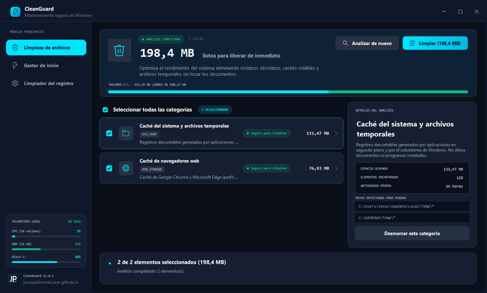

CleanGuard
v1.0.1Utilidad de mantenimiento para Windows 11: limpieza de archivos, gestor de inicio y limpiador del registro en una sola ventana.
Descargar CleanGuardManual de usuario (PDF)

Ficha
- Versión
- 1.0.1
- Plataforma
- Windows 11 (necesita permisos de administrador)
- Instalación
- Un único archivo
CleanGuard.exe(unos 50 MB, incluye el runtime de .NET): se descarga y se ejecuta, sin instalador - Descarga
- GitHub Releases
- Manual
- Manual de usuario v1.0.1 · PDF, 24 páginas, noviembre 2026
El ejecutable no está firmado digitalmente, por lo que Windows puede mostrar el aviso «Windows protegió su PC». El manual explica cómo abrirlo con seguridad.
Qué hace
- Limpieza de archivos: libera espacio borrando temporales, cachés de navegadores, papelera, restos de Windows Update, miniaturas y registros antiguos, en cinco categorías.
- Gestor de inicio: deshabilita los programas que arrancan con Windows sin desinstalarlos, y permite volver a habilitarlos.
- Limpiador del registro: detecta entradas que apuntan a archivos o programas inexistentes, las repara en cinco categorías, guarda antes una copia
.regy permite deshacer. - Siempre con confirmación: el flujo es analizar, elegir y aplicar; no borra nada sin que lo confirmes.
- Telemetría local en vivo: uso de CPU, RAM y disco en la barra lateral, sin enviar datos fuera del equipo. Avisa cuando hay una versión nueva.
Cómo está construido
Arquitectura en capas (Dominio, Aplicación, Infraestructura e Interfaz) con patrón MVP e inyección de dependencias, para mantener la lógica separada de la interfaz.
Registro de cambios
- v1.0.1Noviembre 2026
- Versión actual, con limpieza de archivos, gestor de inicio, limpiador del registro y aviso de actualizaciones.